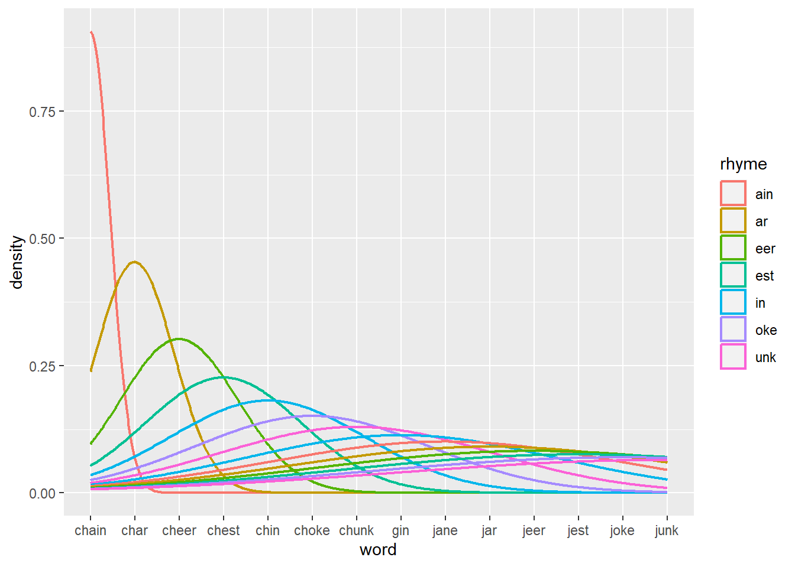

# ERROR: YAMLError: can not read a block mapping entry; a multiline key may not # be an implicit key at line 6, column 1:# install.packages("yaml")library(yaml)
Warning: package 'yaml' was built under R version 4.2.3
#Warning: package ‘yaml’ was built under R version 4.2.3#This is a common message I encountered both on my laptop as well as from the # school desktop. I will try and ignore it and nevertheless complete the # project to the best of my abilities
M. Zhu’s attempt at HP 2. From a USB Drive File given issues on his desktop version of R. 1
First running some libraries
Doing this as a “non website” first. If time permits and it all works, this might perhaps be rendered as a website or there will be an attempt to render this project as such.
library(googlesheets4) #works from campus desktop but not my R. #decided to just work directly from the desktop with it saved on a USB rather than #dealing with my laptop for now
The echo: false option disables the printing of code (only output is displayed).
# install.packages("readxl")library(readxl)
# install.packages("writexl")library(writexl)
Warning: package 'writexl' was built under R version 4.2.3
# A tibble: 8 × 4
...1 Values ...3 ...4
<chr> <chr> <chr> <chr>
1 Row Labels Average of VOT Average of intensity Average of F1
2 dZ 5.8427626765873028E-2 64.286953116746048 422.28500560992069
3 stop 5.8358663047619067E-2 64.125923912460337 420.96380520873021
4 vowel 5.8496590484127017E-2 64.447982321031731 423.60620601111094
5 tS 0.11231036317063492 66.711459088531754 531.17578913730131
6 stop 0.10893950606349208 66.269837632142867 535.02019955714275
7 vowel 0.11568122027777777 67.153080544920641 527.33137871746032
8 Grand Total 8.5368994968254022E-2 65.499206102638908 476.73039737361114
#after getting rid of other aspects, it surprisingly is working
Going to attempt to just used the “Needs V’d” construction because that is a “safe” Google Sheets that I know is “legal” to use despite being repeated from earlier assignments from this class.
ℹ The googlesheets4 package is using a cached token for 'zhumeich@umich.edu'.
✔ Reading from ""Needs V'd" Construction Survey (Responses)".
✔ Range 'Form Responses 1'.
#Attempt at an example/spreadsheet from the textbook "R for Data Science"students_url <-"https://docs.google.com/spreadsheets/d/1V1nPp1tzOuutXFLb3G9Eyxi3qxeEhnOXUzL5_BcCQ0w"students <-read_sheet(students_url)
✔ Reading from "students".
✔ Range 'Sheet1'.
#Copying from the Textbook to test functionalities out # students <- read_sheet(# students_url,# col_names = c("student_id", "full_name", "favourite_food", "meal_plan", "age"),# skip = 1,# na = c("", "N/A"),# col_types = "dcccc"# )#Tried the Control + Shift + C trick to comment everything out
Back to the MIT Data
library(tidyverse)library(readxl)library(writexl)read_excel("mit data desktop.xlsx")
# A tibble: 8 × 4
...1 Values ...3 ...4
<chr> <chr> <chr> <chr>
1 Row Labels Average of VOT Average of intensity Average of F1
2 dZ 5.8427626765873028E-2 64.286953116746048 422.28500560992069
3 stop 5.8358663047619067E-2 64.125923912460337 420.96380520873021
4 vowel 5.8496590484127017E-2 64.447982321031731 423.60620601111094
5 tS 0.11231036317063492 66.711459088531754 531.17578913730131
6 stop 0.10893950606349208 66.269837632142867 535.02019955714275
7 vowel 0.11568122027777777 67.153080544920641 527.33137871746032
8 Grand Total 8.5368994968254022E-2 65.499206102638908 476.73039737361114
#Reads the whole file, trying to have it read the second tab or the .csv
# affricatedata <- read.csv("affricate_data.csv")# data <- read.csv("affricate_data.csv")#attempt at reading the csv file isn't working #seems to work#read_csv("mit data desktop.xlsx")# read_excel("mit data desktop/affricate_data.csv") Not working# read_csv("affricate_data.csv")#Not working# It is a csv within an .xlsx, in the worst case, create a seperate .csv file # #JUST with the CSV data #Created "mit data desktop.csv"read_csv("mit data desktop.csv")
Rows: 504 Columns: 11
── Column specification ────────────────────────────────────────────────────────
Delimiter: ","
chr (7): subject, word, affricate, rhyme, context, clo_voi, aff_voi
dbl (4): repetition, VOT, intensity, F1
ℹ Use `spec()` to retrieve the full column specification for this data.
ℹ Specify the column types or set `show_col_types = FALSE` to quiet this message.
# A tibble: 504 × 11
subject word affricate rhyme context repetition VOT inten…¹ F1 clo_voi
<chr> <chr> <chr> <chr> <chr> <dbl> <dbl> <dbl> <dbl> <chr>
1 cs chain tS ain stop 2 0.084 78.8 410. none
2 cs chain tS ain vowel 2 0.095 74.7 430. none
3 cs chain tS ain stop 1 0.105 78.2 419 none
4 cs chain tS ain vowel 1 0.112 77.2 402 none
5 cs char tS ar stop 1 0.0778 77.3 493 none
6 cs char tS ar vowel 2 0.096 76.2 520. none
7 cs char tS ar vowel 1 0.105 78.8 631 none
8 cs char tS ar stop 2 0.149 75.9 516. none
9 cs cheer tS eer stop 1 0.0871 81.8 352 none
10 cs cheer tS eer stop 2 0.107 76.1 329. none
# … with 494 more rows, 1 more variable: aff_voi <chr>, and abbreviated
# variable name ¹intensity
#This worked, created another file just as a .csv was easier to work with than # to try and navigate within that .xlsx file for the .csv tab #Note: I also put these files in the "website" folder after creating the website #project or else it woudl not run #something about a comma as a delimiter
Note: Lacking “creativity,” I am admitting that I am looking for inspiration, with slightly modified code straight from the textbook, referencing: https://r4ds.hadley.nz/spreadsheets.html
affricates <-read_csv("mit data desktop.csv") #Assigning the CSV as a # "variable" name for now
Rows: 504 Columns: 11
── Column specification ────────────────────────────────────────────────────────
Delimiter: ","
chr (7): subject, word, affricate, rhyme, context, clo_voi, aff_voi
dbl (4): repetition, VOT, intensity, F1
ℹ Use `spec()` to retrieve the full column specification for this data.
ℹ Specify the column types or set `show_col_types = FALSE` to quiet this message.
#Column Specification Error # affricates <- read_sheets(affricates) #Error #Perhaps not "read sheets" but rather "read excel?" or read csvaffricates #This Worked
# A tibble: 504 × 11
subject word affricate rhyme context repetition VOT inten…¹ F1 clo_voi
<chr> <chr> <chr> <chr> <chr> <dbl> <dbl> <dbl> <dbl> <chr>
1 cs chain tS ain stop 2 0.084 78.8 410. none
2 cs chain tS ain vowel 2 0.095 74.7 430. none
3 cs chain tS ain stop 1 0.105 78.2 419 none
4 cs chain tS ain vowel 1 0.112 77.2 402 none
5 cs char tS ar stop 1 0.0778 77.3 493 none
6 cs char tS ar vowel 2 0.096 76.2 520. none
7 cs char tS ar vowel 1 0.105 78.8 631 none
8 cs char tS ar stop 2 0.149 75.9 516. none
9 cs cheer tS eer stop 1 0.0871 81.8 352 none
10 cs cheer tS eer stop 2 0.107 76.1 329. none
# … with 494 more rows, 1 more variable: aff_voi <chr>, and abbreviated
# variable name ¹intensity
#Play with earlier content againaffricates <-read_csv("mit data desktop.csv", col_names =c("subject", "word", "affricate", "rhyme", "context", "repetition", "VOT", "intensity", "F1", "clo_voi", "aff_voi"), show_col_types =FALSE) #now this works#Given Note: Specify the column types or set `show_col_types = FALSE` to quiet # this message.# Admitting being influenced by the code from the Textbook: # affricates <- read_sheet(# students_url,# col_names = c("student_id", "full_name", "favourite_food", "meal_plan", "age"),# skip = 1,# na = c("", "N/A"),# col_types = "dcccc"# )# # students
affricates <-read_csv("mit data desktop.csv", col_names =c("subject", "word", "affricate", "rhyme", "context", "repetition", "VOT", "intensity", "F1", "clo_voi", "aff_voi"), show_col_types =FALSE, skip =1, na =c("", "N/A")) # col_types = "dccc") #this line caused the issue, # removed it# Warning: One or more parsing issues, call `problems()` on your data frame for details, e.g.:# dat <- vroom(...)# problems(dat)#Finished with the read/write CSV phase, at least # affricates#Error: unexpected symbol in "mit data"
Trying to “render” at this stage.
affricates
# A tibble: 504 × 11
subject word affricate rhyme context repetition VOT inten…¹ F1 clo_voi
<chr> <chr> <chr> <chr> <chr> <dbl> <dbl> <dbl> <dbl> <chr>
1 cs chain tS ain stop 2 0.084 78.8 410. none
2 cs chain tS ain vowel 2 0.095 74.7 430. none
3 cs chain tS ain stop 1 0.105 78.2 419 none
4 cs chain tS ain vowel 1 0.112 77.2 402 none
5 cs char tS ar stop 1 0.0778 77.3 493 none
6 cs char tS ar vowel 2 0.096 76.2 520. none
7 cs char tS ar vowel 1 0.105 78.8 631 none
8 cs char tS ar stop 2 0.149 75.9 516. none
9 cs cheer tS eer stop 1 0.0871 81.8 352 none
10 cs cheer tS eer stop 2 0.107 76.1 329. none
# … with 494 more rows, 1 more variable: aff_voi <chr>, and abbreviated
# variable name ¹intensity
#Note that it is rendering, yaml header, made it output as "console"#renders but points to an issue:# Rows: 504 Columns: 11── Column specification ───────────────────────────────────────────────────────────────────────# Delimiter: ","# chr (7): subject, word, affricate, rhyme, context, clo_voi, aff_voi# dbl (4): repetition, VOT, intensity, F1# ℹ Use `spec()` to retrieve the full column specification for this data.# ℹ Specify the column types or set `show_col_types = FALSE` to quiet this message.
Section: Attempt at Grouping (Mutating, Grouping, and Summarizing)
library(tidyverse)#install.packages("nycflights13")#library(nycflights13)# Error, just done as a sample, nyc flights isn't necessary for this project.affricates |>count(repetition) |>filter(n >1)
# A tibble: 2 × 2
repetition n
<dbl> <int>
1 1 252
2 2 252
# A tibble: 504 × 12
id subject word affricate rhyme context repetition VOT intensity F1
<int> <chr> <chr> <chr> <chr> <chr> <dbl> <dbl> <dbl> <dbl>
1 1 cs chain tS ain stop 2 0.084 78.8 410.
2 2 cs chain tS ain vowel 2 0.095 74.7 430.
3 3 cs chain tS ain stop 1 0.105 78.2 419
4 4 cs chain tS ain vowel 1 0.112 77.2 402
5 5 cs char tS ar stop 1 0.0778 77.3 493
6 6 cs char tS ar vowel 2 0.096 76.2 520.
7 7 cs char tS ar vowel 1 0.105 78.8 631
8 8 cs char tS ar stop 2 0.149 75.9 516.
9 9 cs cheer tS eer stop 1 0.0871 81.8 352
10 10 cs cheer tS eer stop 2 0.107 76.1 329.
# … with 494 more rows, and 2 more variables: clo_voi <chr>, aff_voi <chr>
#Not sure if that did anything, though
#Mutating Join Attempt#They mix characters and digits, attempt the same here affricates2 <- affricates |>select(subject, word, affricate, repetition, VOT, intensity, F1)affricates2
#Each of these are producing a different table, indicates the functions are # working
library(tidyverse)library(dplyr)# dplyr::join_by()#affricates3 |> # left_join(affricates2, join_by(F1))# Suggested this , `copy` = TRUE, still not working # not sure why "join_by" isn't working # Error in join_by(F1) : could not find function "join_by"#Tried many times, just going to give up on "join_by" for now.affricate_df <-tibble(word =c("chain", "cheer", "chin", "choke"))# df |> cross_join(df)#Error in cross_join(df, df) : could not find function "cross_join"#Reinstating tidyverse, but cross_join isn't working. affricate_df
# A tibble: 4 × 1
word
<chr>
1 chain
2 cheer
3 chin
4 choke
# left_join(word, rhyme, join_by(repetition))# # #Not working# Error in UseMethod("left_join") : # no applicable method for 'left_join' applied to an object of class "function"
affricates |>summarize(mean_intensity =mean(intensity, na.rm =TRUE),.by = VOT )
#Prints output, but printing an issue: # Warning: argument is not numeric or logical: returning NAWarning: argument is not numeric or logical: returning NAWarning:
Finished with the “joins” section.
Ideally, there would be different pages, one “index” page, one page for “joins” and one page for “plots.” However, keeping them all as one single “page” for simplicity now.
Next Section: Attempt at Plotting the Data
Inspired by code from both the textbook and the course github site: https://lisalevinson.github.io/2023-winter_ling343/classes/2023-02-09.html etc.
#removing this to see if it helps with preventing the rendering error#removing "#| warning: true"affricates
# A tibble: 504 × 11
subject word affricate rhyme context repetition VOT inten…¹ F1 clo_voi
<chr> <chr> <chr> <chr> <chr> <dbl> <dbl> <dbl> <dbl> <chr>
1 cs chain tS ain stop 2 0.084 78.8 410. none
2 cs chain tS ain vowel 2 0.095 74.7 430. none
3 cs chain tS ain stop 1 0.105 78.2 419 none
4 cs chain tS ain vowel 1 0.112 77.2 402 none
5 cs char tS ar stop 1 0.0778 77.3 493 none
6 cs char tS ar vowel 2 0.096 76.2 520. none
7 cs char tS ar vowel 1 0.105 78.8 631 none
8 cs char tS ar stop 2 0.149 75.9 516. none
9 cs cheer tS eer stop 1 0.0871 81.8 352 none
10 cs cheer tS eer stop 2 0.107 76.1 329. none
# … with 494 more rows, 1 more variable: aff_voi <chr>, and abbreviated
# variable name ¹intensity
# geom_smooth(method = "loess", se = FALSE)#The last line did not seem to help.#Not a particularly good plott, but at the very least, a plot was produced# Continue to improve from here and interatively come up with better plots
#removed the original backticks in R to see if that would fix the rendering issue#removing "#| warning: false"affricates
# A tibble: 504 × 11
subject word affricate rhyme context repetition VOT inten…¹ F1 clo_voi
<chr> <chr> <chr> <chr> <chr> <dbl> <dbl> <dbl> <dbl> <chr>
1 cs chain tS ain stop 2 0.084 78.8 410. none
2 cs chain tS ain vowel 2 0.095 74.7 430. none
3 cs chain tS ain stop 1 0.105 78.2 419 none
4 cs chain tS ain vowel 1 0.112 77.2 402 none
5 cs char tS ar stop 1 0.0778 77.3 493 none
6 cs char tS ar vowel 2 0.096 76.2 520. none
7 cs char tS ar vowel 1 0.105 78.8 631 none
8 cs char tS ar stop 2 0.149 75.9 516. none
9 cs cheer tS eer stop 1 0.0871 81.8 352 none
10 cs cheer tS eer stop 2 0.107 76.1 329. none
# … with 494 more rows, 1 more variable: aff_voi <chr>, and abbreviated
# variable name ¹intensity
These next two were attempts that worked locally in R, but which created rendering issues for some reason:
#Causing a potential rendering issue, commenting out this attempt # ggplot(data = affricates,# mapping = aes(x = VOT, y = intensity, color = affricate)) + # geom_point() + # geom_smooth(method = "lm")#Trying Numerical Data#This one might be causing the rendering issue
Another Attempt:
ggplot(data = affricates,mapping =aes(x = VOT, y = intensity, color = rhyme)) +geom_point() +geom_smooth(method ="lm")
`geom_smooth()` using formula = 'y ~ x'
#Removed "affricate" for color to avoid confusion to see if this renders #It renders and something about "error in list2(na.rm = na.rm, ...) object # 'VOT" not found
#Causing a potential rendering issue, commenting out this attempt # ggplot(data = affricates2,# mapping = aes(x = VOT, y = intensity)) + # geom_point(mapping = aes(color = affricate, shape = repetition)) + # geom_smooth(method = "lm") + # labs(# title = "VOT vs Intensity by Affricate Type and Repetition",# Subtitle= "Count from MIT Affricate Datasheet", # x = "VOT", y ="intensity", # color = "affricate", shape = "repetition"# )
Trying Again:
ggplot(data = affricates,mapping =aes(x = VOT, y = intensity)) +geom_point(mapping =aes(color = rhyme, shape = context)) +geom_smooth(method ="lm") +labs(title ="VOT vs Intensity by Affricate Type and Repetition",Subtitle="Count from MIT Affricate Datasheet", x ="VOT", y ="intensity", color ="rhyme", shape ="repetition" )
`geom_smooth()` using formula = 'y ~ x'
#Changed a rew things, such as context and not repetition and now it seems to be #able to run
# Caused an execution error:# Error in `geom_bar()`:# ! Problem while computing aesthetics.# ℹ Error occurred in the 1st layer.# Caused by error in `fct_infreq()`:# ! `f` must be a factor or character vector, not a numeric vector# Backtrace:# 1. global .main()# 43. forcats::fct_infreq(repetition)# ggplot(affricates, aes(x = fct_infreq(repetition))) +# geom_bar()#Trying Again with it as a character vector ggplot(affricates, aes(x =fct_infreq(affricate))) +geom_bar()
#now this new version works
# ggplot(affricates, aes(x = repetition)) +# geom_histogram(binwidth = 10)#Causing an error #Tried multiple different variables for "x" and there were still errors# Error in geom_histogram(binwidth = 10) :# ℹ Error occurred in the 1st layer.# Caused by error in `setup_params()`:# ! `stat_bin()` requires a continuous x aesthetic# ✖ the x aesthetic is discrete.# ℹ Perhaps you want `stat="count"`?
ggplot(affricates3, aes(x = word, color = affricate)) +geom_density(linewidth =0.75)
# Works but seems to cause some issues # Lists # Warning: [38;5;232mGroups with fewer than two data points have been dropped # .[39m# Warning: no non-missing arguments to max; returning -Inf# But it is still rendering # Warning disappeared now
#Another Attempt, Similar Issuesggplot(affricates, aes(x = word, color = rhyme)) +geom_density(linewidth =0.75)

#Still Renders, though and looks decent
ggplot(affricates, aes(x = word, color = rhyme, fill = rhyme)) +geom_density(linewidth =0.75, alpha =0.5)
#Renders, had an error, but now it's gone
Two Numerical Variables
ggplot(affricates, aes(x = VOT, y = intensity)) +geom_point()
#Here, repetition works cause you're splitting it up into two graphs based on it.
This was originally just a regular “R project.”
At this point, I tried the “R website” option and created an “R website” though I am not sure if the R website is going to run or render or not.
Attempt at some more graphs:
ggplot(affricates, aes(VOT, intensity)) +geom_density2d_filled(n =5, h =10)
#Good Try, though this doesn't yield anything too meaningful.
After changing this to a website project, the code is running in the console or off on the right side as a “plot” instead of here in Quarto. though it still renders as-is in the browser.
Perhaps if I delete the _quarto.yml file, I can make this a regular file again
New plots influenced by https://psyteachr.github.io/reprores-v3/ggplot.html
ggplot(affricates, aes(word, intensity)) +geom_density2d_filled(n =5, h =10)
ggplot(affricates, aes(affricate, intensity)) +geom_density2d_filled(n =30, h =3)
#Looks more meaningful
# ggplot(affricates, aes(word, intensity)) + # geom_density2d()#not working
ggplot(affricates, aes(word, VOT, color = affricate)) +geom_count()
#works, interesting results
#This one does not seem to be producing anything meaningful ggplot(affricates, aes(word, affricate, color = intensity)) +geom_smooth(formula = y ~ x, method="lm") +theme_minimal(base_size =18)
End of the Plots Section.
Next Step: Strings
(Note: If the “website” version is not working very well, a “non website” version” or an attempt at creating it will be tried)